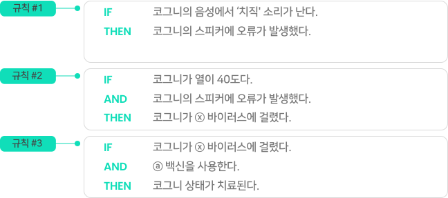

읽기자료
실습: 추론 엔진을 이용해보자 !


문제 1.
아래 문제를 읽고 실습을 풀어보세요.
다음 사실들을 차례대로
오른쪽의 지식 베이스에 끌어넣어 추론 엔진을 점화시켜보세요.
오른쪽의 지식 베이스에 끌어넣어 추론 엔진을 점화시켜보세요.
사실블록
사실 A: 코그니의 음성에서 ‘치직 소리가 난다.
사실 B: 코그니는 열이 40도다.
사실 C: ⓐ 백신을 사용한다.
지식 베이스 (규칙)
왼쪽의 사실블록을 지식베이스에 끌어 넣어보세요.

추론 엔진
주어진 사실과 지식 베이스의 규칙을 이용해 새로운 사실을 찾아냅니다.
규칙 #1
사실 A: 코그니의 음성에서 ‘치직 소리가 난다.
추론된 사실 D: 코그니의 스피커에 오류가 발생했다.
규칙 #2
사실 B: 코그니는 열이 40도다.
추론된 사실 D: 코그니의 스피커에 오류가 발생했다.
추론된 사실 E: 코그니가 ⓧ 바이러스에 걸렸다.
규칙 #3
사실 B: 코그니는 열이 40도다.
추론된 사실 D: 코그니의 스피커에 오류가 발생했다.
추론된 사실 E: 코그니가 ⓧ 바이러스에 걸렸다.